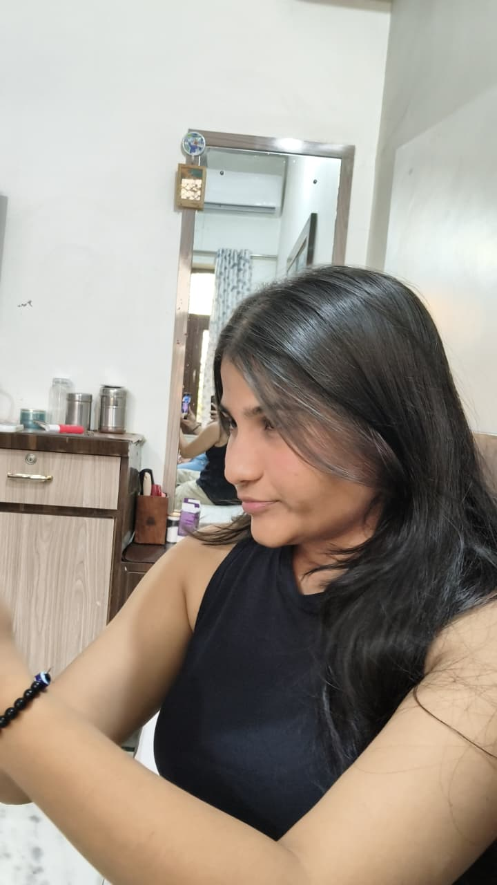

|
 |
Results-driven and detail-oriented professional with strong problem-solving, communication, and organizational skills. Adept at learning new technologies quickly, collaborating with cross-functional teams, and delivering high-quality results in fast-paced environments. Committed to continuous improvement and contributing to organizational success through innovation, accountability, and a customer-focused approach. |
Remote | June 2026 – July 2026
2026 – Present
Technologies: Python, Flask, Scikit-learn, Hugging Face Transformers, HTML, CSS, JavaScript, Bootstrap, MySQL Description: Developed an AI-powered web application to analyze social media content. Implemented Sentiment Analysis, Toxicity Detection, and Fake News Detection using machine learning and NLP models. Compared traditional ML algorithms (Logistic Regression, Naïve Bayes, SVM) with transformer models like BERT and RoBERTa. Built a responsive web interface with a Flask backend and MySQL databa
Technologies: HTML, CSS, JavaScript, PHP, MySQL Description: Developed a web-based expense tracking application for managing daily income and expenses. Implemented user authentication, transaction management, and expense history. Integrated MySQL for secure data storage and retrieval. Designed a responsive and user-friendly interface.
Technologies: Python Description: Built a console-based employee management application. Implemented CRUD (Create, Read, Update, Delete) operations for employee records. Used object-oriented programming concepts to improve modularity and maintainability. Added search and record management functionality.
Technologies: Java Description: Developed a Java-based application for booking movie tickets. Implemented movie selection, seat reservation, ticket confirmation, and billing features. Applied object-oriented programming principles to structure the application. Designed an interactive menu-driven interface.
Technologies: Python, Pandas, NumPy, Scikit-learn, OpenCV Projects Completed: House Price Prediction using Linear Regression Customer Segmentation using K-Means Clustering Cats vs Dogs Image Classification using SVM Hand Gesture Recognition using Computer Vision Food Image Classification using the Food-101 Dataset Description: Performed data preprocessing, feature engineering, model training, evaluation, and visualization across multiple machine learning tasks.
My Cgpa is 9.42
I am a Software Engineer